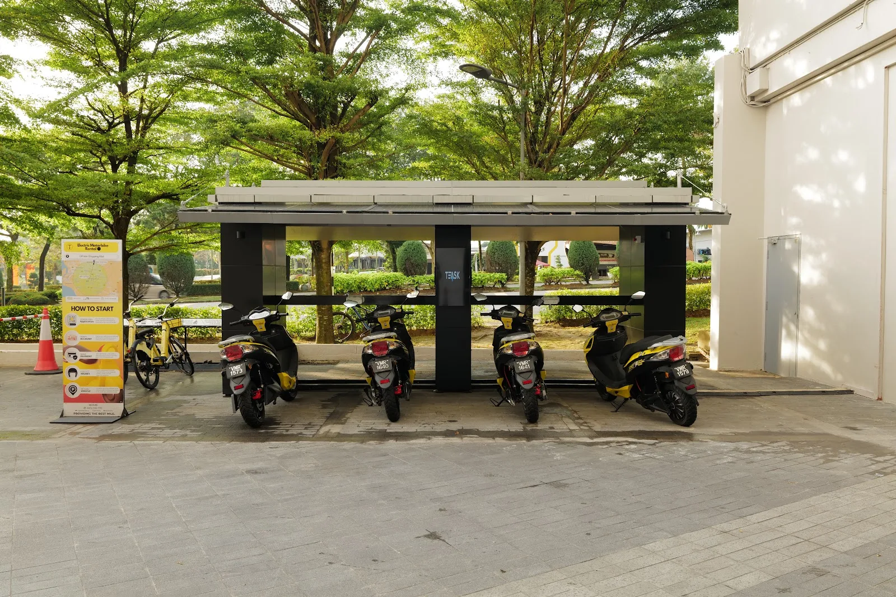
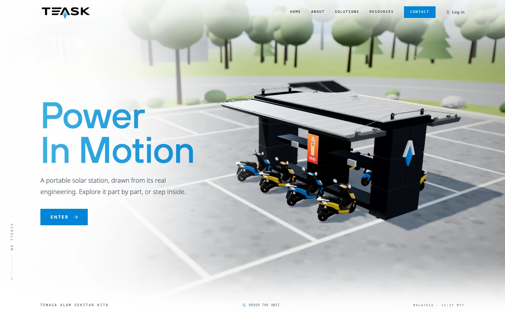
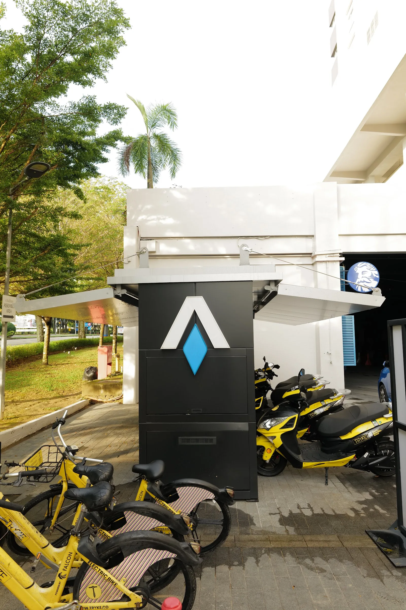
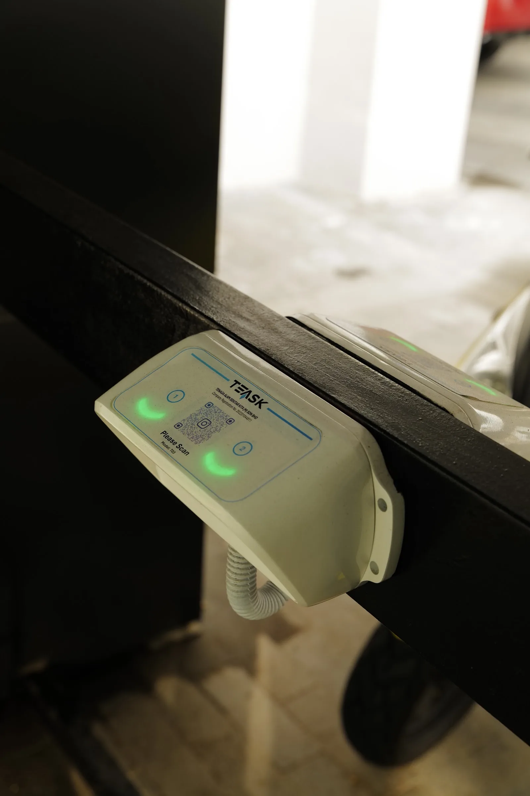
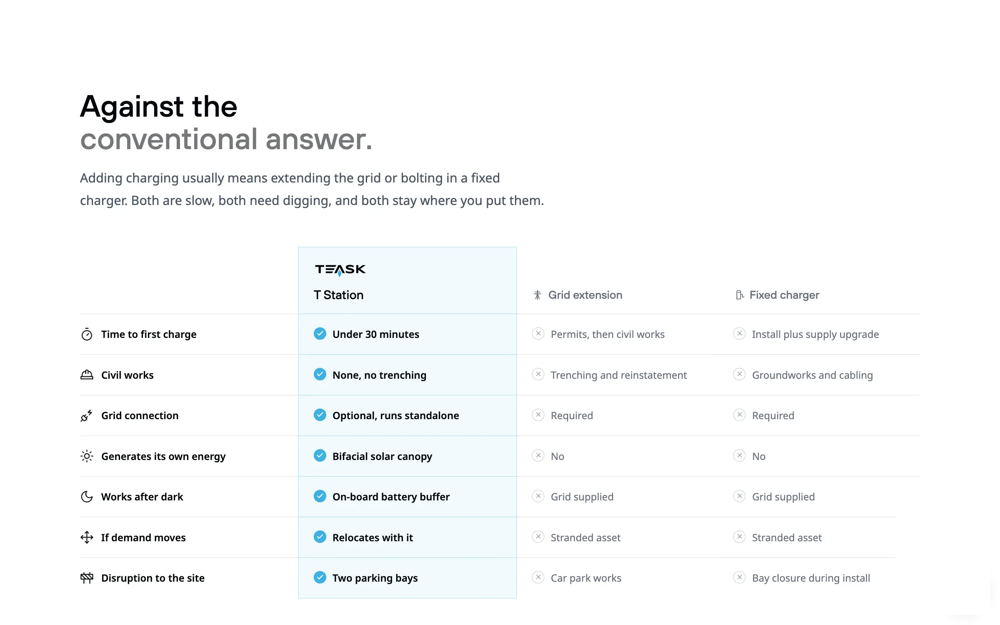
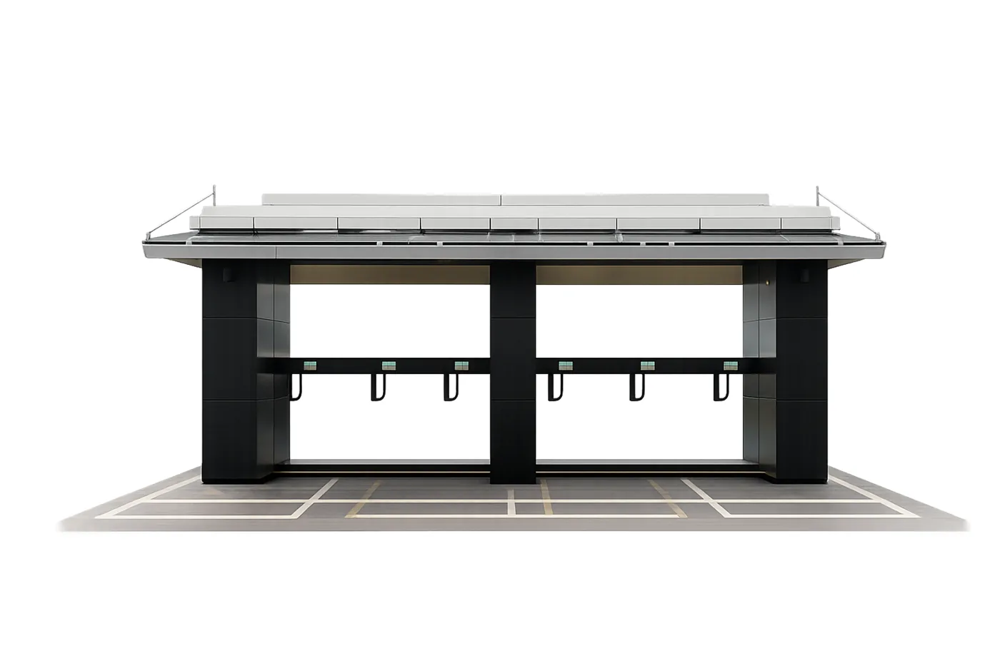
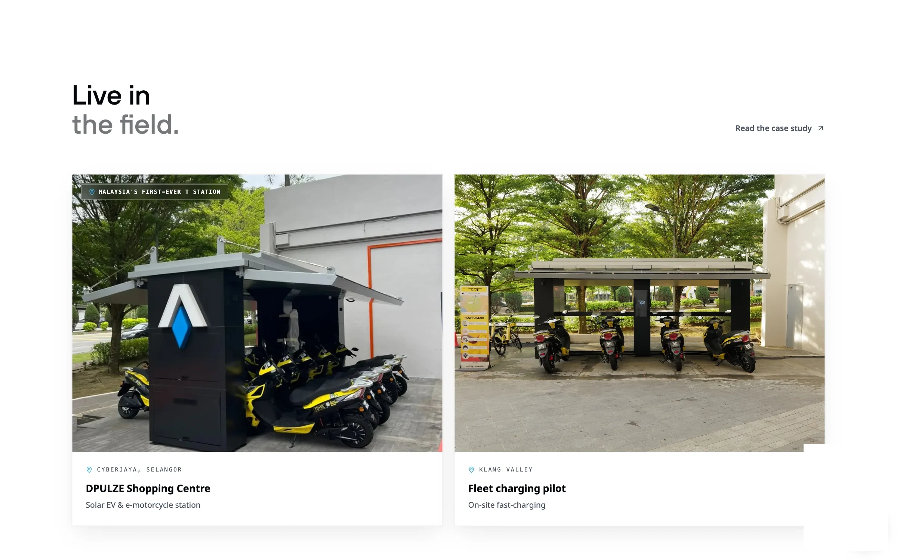
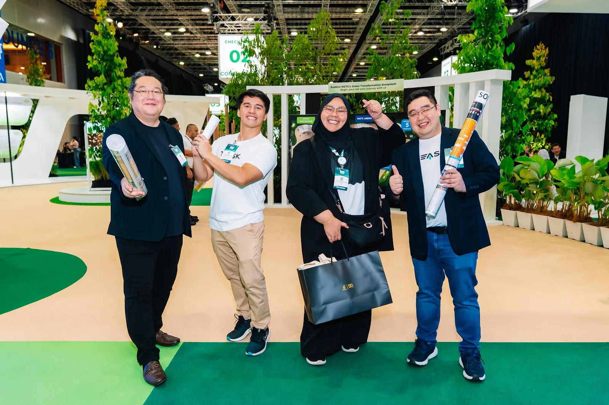

Back to work
Teask

An audit, a brand strategy and a rebuilt website for a portable solar charging station that deploys in under 30 minutes.
The audit came first: the old site scored 2.8 out of 10. Then the strategy was locked, then a site of nine pages built around the station itself.

The home page: the T Station in 3D, drawn from its real engineering.


Against the conventional answer: no trenching, no grid upgrade, two parking bays, and it moves when demand moves.


Live on 31 July 2026, the old site retired the same day, the SEO tuned on the live site before handover.

